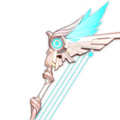

Гайд на Тигнари
Тигнари – 5⭐ лесной страж из региона Сумеру и первый лимитированный легендарный Дендро лучник, который открывает игрокам новые стихийные реакции и игровой процесс. Тигнари всегда приходит на помощь нуждающимся, решая проблемы быстро и профессионально. Однако если беда происходит по вине самого пострадавшего, встреча с лесным стражем может оказаться неоднозначной.
Основная роль Тигнари в отряде – главный-дд. Все его способности нацелены на нанесение Дендро урона и усиление собственных атак. На 4-ом созвездии он может раскрыться и как сап-дд (за счет бафф мастерства стихий отряду), но данную консту сможет получить далеко не каждый. Поэтому в первую очередь стоит рассматривать героя как основного дд-реактора, закрывающего реакцию, или апликатора для накладывания Дендро статуса. В любом случае он всегда играет от взаимодействия разных стихий.
Также стоит отметить, что пассивные таланты Тигнари явно говорят, что мастерство стихий – один из самых главных статов для героя. Однако учитывая, что он занимает основную позицию в отряде, данный стат предстоит балансировать с силой атаки и критами.
Лучшие артефакты на Тигнари — наборы с бонусами элементального урона и мастерства стихий. Поскольку основной урон персонаж наносит с помощью Дендро и его взаимодействий с другими стихиями.

Оружие для Тигнари стоит подбирать, исходя из его роли в отряде и геймплея. Например, если хотите сделать упор на собственный урон, можно поставить оружие на повышение дамага от заряженных атак. Если планируете играть от реакций, подойдут луки на увеличение мастерства стихий.
